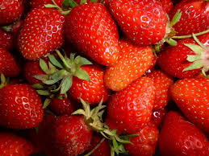
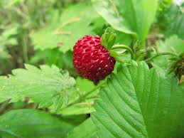

la fraise des bois, un fruit sympa
Culture
La fraise des bois, à l’origine, est plutôt indigène en Europe où cette plante herbacée vivace et rustique pousse à l’état sauvage dans les bois, leurs lisières et les talus arborés, depuis le Moyen-âge. C’est un régal de manger des fraises des bois au détour d’une balade !
Certains s’en méfient du fait qu’elles peuvent être contaminées par l’échinococcose, parasite se trouvant dans les excréments des chiens et des renards ; qui peut entrainer chez l’homme la formation de kystes. En les cuisant, vous tuez le parasite mais vous perdez aussi la saveur rafraichissante et si caractéristique.
La fraise des bois, fraise commune, ou fraise sauvage, est un petit fruit très parfuméC’est un fruit riche en vitamines B et C,

Confusion possible
C'est une espèce originaire d'Europe, d'Amérique du Nord et d'Asie tropicale et naturalisée en d'autres points du globe.
- Plus petite que les autres sous-espèce
- Fleurs plus grande que les autres sous-espècess
- Folioles plus rondes et plus denteléess
Utilisation
La fraise des bois, cette fraise sauvage, a toujours poussé spontanément un peu partout sur la planète. Et elle continue de le faire. La fraise des bois est l’ancêtre de toutes les fraises actuelles après que le Fragaria vesca, le fraisier des bois, a été croisé, hybridé des centaines de fois. Plus petite que les fraises, la fraise des bois est aussi plus parfumée, surtout la sauvage. Plusieurs variétés ont été développées pour sa culture qui donnent des fruits un peu plus gros et moins parfumés.
Trop fragiles, les fraises des bois ne se lavent pas, même rapidement. Cultivées hors sol ou en pleine terre sur une épaisse couche de paille, elles ne sont jamais terreuses. Et en principe ramassées avec des mains gantées. Elles s’équeutent avec précaution.
On la consomme aussi bien crue que cuite, en pâtisseries, ou alors en confitures.Fragaria vesca est courament appelée fraisier des bois,

On déguste les fraises des bois déguster telles quelles, natures, sucrées ou non. Elles peuvent être utilisées à la place d’autres fraises dans des gâteaux, tartes sucrées, charlottes ou clafoutis, glaces et sorbets, confitures, gelées
Comme ses descendantes les autres fraises, la fraise des bois est riche en vitamine C, en molécules antioxydantes et en sels minéraux. Elle contient aussi pas mal de fibres, ses petits grains étant composés de pectine.
Dons la littérature
Fragaria vesca, le fraisier des bois, est une espèce sauvage. Pour la culture, il s'agit souvent de prélèvement d'individus sauvages. Cependant, des variétés améliorées sont proposées à la vente par les spécialistes.
Il est tolérant à la chaleur et à la sécheresse mais pour une bonne production, il préfère un sol frais, plutôt acide et une exposition ensoleillée.
La multiplication se fait habituellement par division des touffes à l'automne.
Très résistant au froid, il craint cependant les gelées printanières.
Ces faux-fruits se conservent difficilement et doivent être consommés rapidement.
L'espèce est généralement exempte de maladies et parasites.
d'Amérique du Nord et d'Asie tropicale et naturalisée en d'autres points du globe.
suiver:http://www.google.com